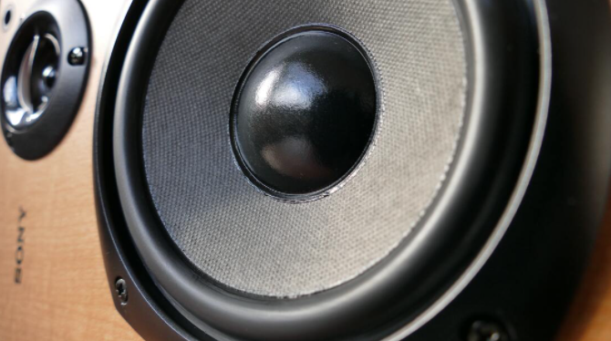

O U R A P P R O A C H
Music-Driven Inquiry

Real Music
Real Loud
Real Fun
On a professional music server, students write code that produces high-quality hip hop beats.
Students share their musical creations over our professional sound system... and feel the bass!
By creating their own beats and connecting with others, students have fun learning to code!
B A C K E D B Y S C I E N C E
Code Beats Research
Except for the few students who "just get it", learning to program can be frustrating and, worse, boring.
Educators have tried for years to make computer science more engaging by programming robots, IoT devices,
and even video games. But each of these causes more problems than they solve. Robots are expensive, creating
a bottleneck to learning, with four or more students to a single robot. IoT devices are complex, requiring
low-level coding that is beyond the reach of most beginners. Video games require extensive background knowledge
in 2D and 3D graphics. There must be a better way to engage students in programming!
We started Code Beats because we believe there is a better way to learn programming: by making music. We teach
computational thinking via a curriculum where (1) students learn how to code to manipulate and create hip hop beats
and (2) students experience computation. As students make beats, they, almost without noticing, learn fundamental
concepts and skills of computer science. If your child has an interest in music and hiphop beats, our courses are a
way to explore their interests while, at the same time, learn the increasingly important skill of programming.